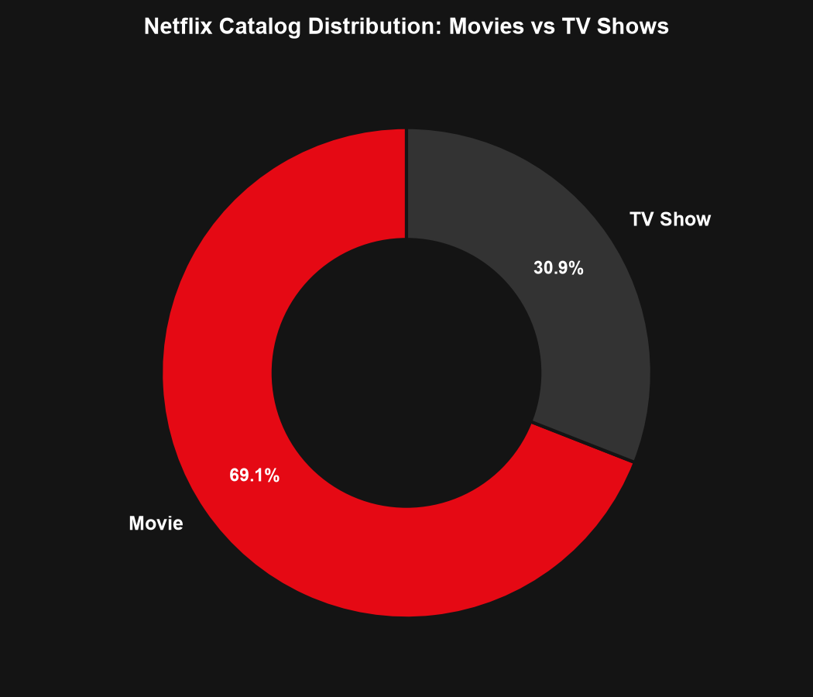
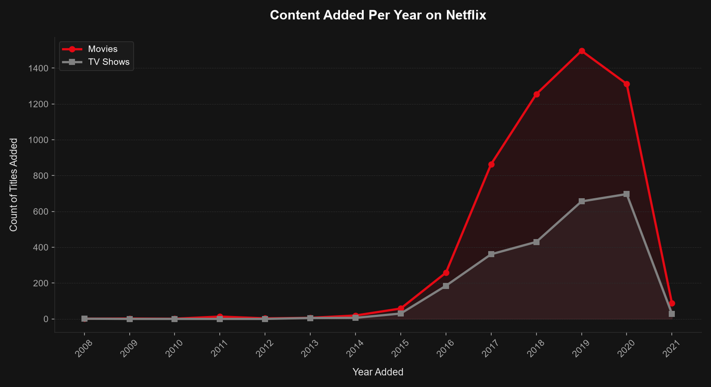
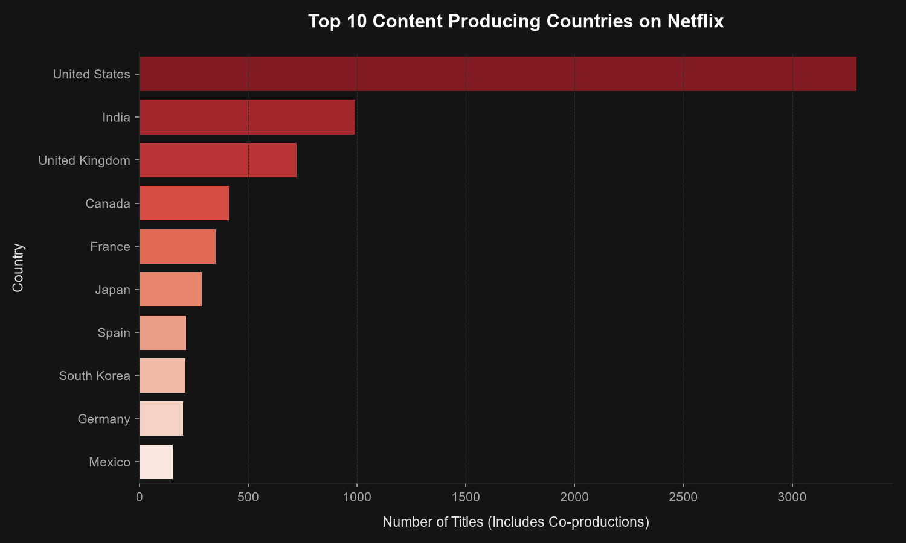
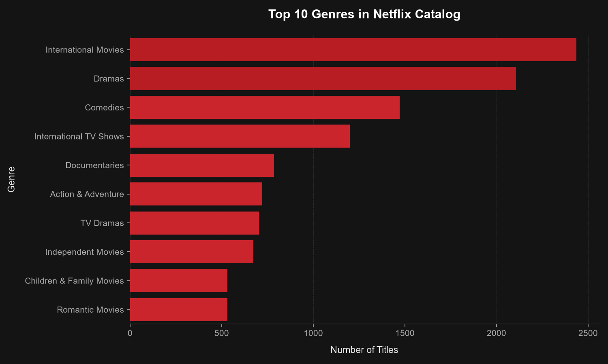
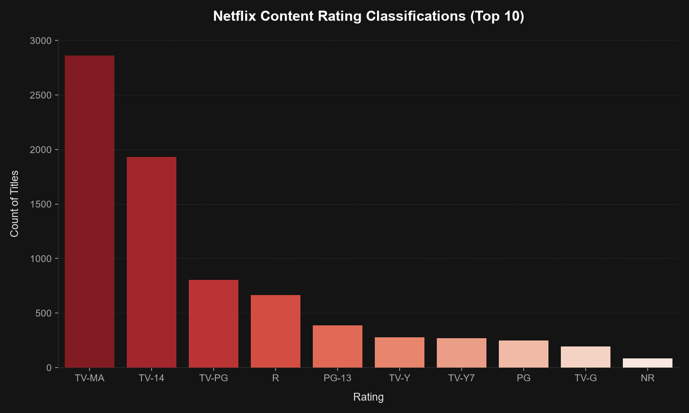
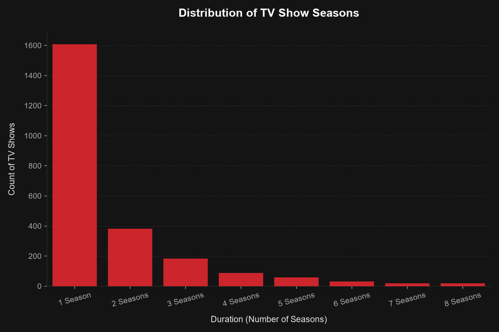

Netflix Streaming Trends & Content Analysis
An in-depth exploratory data analysis (EDA) of Netflix's catalog to uncover content distribution patterns, global production hubs, and evolving release strategies over the years.
Total Catalog Titles
Movies & TV Shows
Movies Distribution
6,131 titles
TV Shows Distribution
2,676 titles
Top Producer Country
3,689 titles co-produced
Catalog Composition
Seaborn / Matplotlib
Movies dominate the Netflix platform, representing nearly 70% of the total titles, while TV shows account for the remaining 30%. TV shows typically feature multiple seasons, demanding longer viewer engagement.
Growth Over Time
Matplotlib Area
Netflix experienced exponential catalog growth after 2015, peaking around 2019. The release rate shows a focus on relatively modern, fresh content with consistent additions annually.
Exploratory Data Analysis Gallery
Click on any chart tab below to inspect specific metrics, distribution patterns, and production statistics.
Content Additions Over Time
Insight Analysis
- Pre-2015: Steady but slow accumulation of titles.
- Post-2015: Massive growth in both formats as Netflix transitioned from a content hub to a primary producer.
- Recent Strategy: Gradual plateauing in 2020/2021 as focus shifted towards quality, original licensing, and international diversity rather than sheer catalog volume.
Global Production Hubs

Insight Analysis
- United States: Undisputed leader in content production, representing the bulk of both Netflix Originals and licensed content.
- India: The second-largest contributor, driven by a highly dominant movie library (Bollywood catalog).
- International Expansion: United Kingdom, Japan, South Korea, and Canada hold solid shares, highlighting Netflix's heavy investment in international markets (e.g., Anime from Japan, K-Dramas from South Korea).
Catalog Genre Distribution

Insight Analysis
- Dramas & International Movies: These rank as the most prevalent genres, indicating a strong preference for narratives with international appeal.
- Comedies & Documentaries: Highly popular categories that draw massive, broad audiences.
- Niche Content: Action, Thrillers, and Romance remain highly competitive, showing that Netflix maintains a highly balanced portfolio to satisfy varied demographic groups.
Target Audience Rating Distribution

Insight Analysis
- TV-MA (Mature Audience): The single largest rating category. Shows Netflix has a strong focus on mature viewers with complex themes, dramas, and gritty content.
- TV-14 (Parents Strongly Cautioned): The second-largest classification, capturing standard teens and family viewing groups.
- PG-13 / R / TV-PG: Medium-level distribution, showing a wide range of content styles from movies to serials.
TV Show Durations (Seasons)

Insight Analysis
- 1 Season Domination: The vast majority of TV Shows on Netflix only run for 1 Season. This is due to many single-season limit/mini-series releases, as well as rapid cancellations of shows that underperform.
- Multi-season Retention: Retaining shows past 3 Seasons is relatively rare, indicating that Netflix prioritizes launching new intellectual property over sustaining long-running, expensive series unless they achieve massive global popularity (e.g., Stranger Things).
Movies vs TV Shows Composition
Insight Analysis
- Quick Consumption vs Long Retention: Movies offer quick, single-session viewing which keeps users coming back daily. TV Shows provide higher long-term engagement and platform retention.
- Acquisition Cost: Licensing movies is often cheaper in bulk, leading to a higher movie count, while TV shows require long-term production and planning budgets.
Interactive Netflix Catalog Explorer
Filter, search, and page through the cleaned dataset containing 8,807 Netflix records.
| Type | Title | Director | Country | Release Year | Rating | Duration | Genres |
|---|---|---|---|---|---|---|---|
| Loading dataset... | |||||||
Executive Summary of Findings
The analysis of the Netflix catalog reveals a mature, highly calculated content acquisition and creation strategy. Key indicators point to a shift from licensing library content to aggressively pushing for original, international IPs.
🎬 Movie Dominance vs TV Show Longevity
▼While Movies comprise nearly 70% of Netflix's catalog, TV shows are the core driver of long-term subscriber retention. However, TV shows on Netflix suffer from high attrition, with the vast majority (over 65%) not surviving past Season 1. This reflects Netflix's "churn-and-burn" content strategy: canceling shows that do not immediately build a highly active fan base while continuing to fund new concepts to acquire subscribers.
🚀 The Post-2015 Content Boom
▼A massive, exponential surge in content additions is visible starting in 2016. This coincides with Netflix's aggressive international expansion (launching globally in 130 new countries in January 2016). The rapid platform expansion required localized content libraries, leading to high-volume licensing deals and the establishment of Netflix Studio hubs globally.
🔞 Mature Audiences Take the Lead
▼Over 40% of the entire Netflix catalog is rated TV-MA (Mature Audience only), and when combined with TV-14, they account for roughly 75% of all content. This indicates that Netflix's core target audience is adults and teenagers. It deliberately leans away from competing directly with Disney+ on children's animation, focusing instead on prestige drama, thrillers, stand-up comedy, and mature anime.
🌍 True International Expansion
▼While the United States remains the single largest producing country, the catalog has become increasingly global. Content from India (second largest, especially for movies), the United Kingdom, Japan (anime), and South Korea (K-dramas) represents a huge share. The success of international co-productions and localized Netflix Originals shows the platform is successfully driving subscriber growth outside of North America.
🎨 Drama and International Genre Hegemony
▼The top catalog tags are "Dramas", "Comedy", and "International Movies". The high prevalence of "International" tags represents the globalization of content: translating, dubbing, and offering shows across borders. These genres offer the highest cross-cultural conversion, meaning a drama produced in South Korea or Spain (like Squid Game or Money Heist) has a high probability of finding global mass appeal.